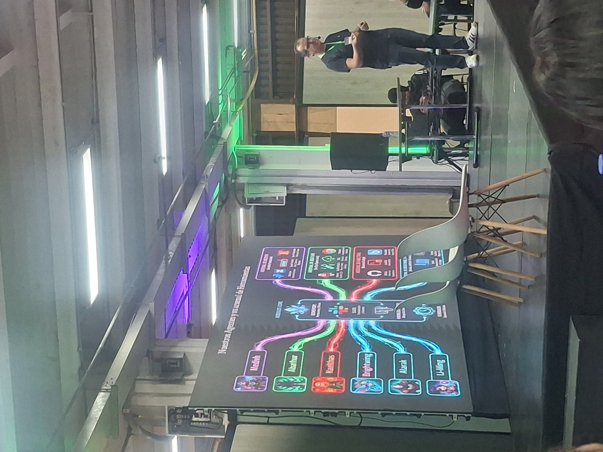
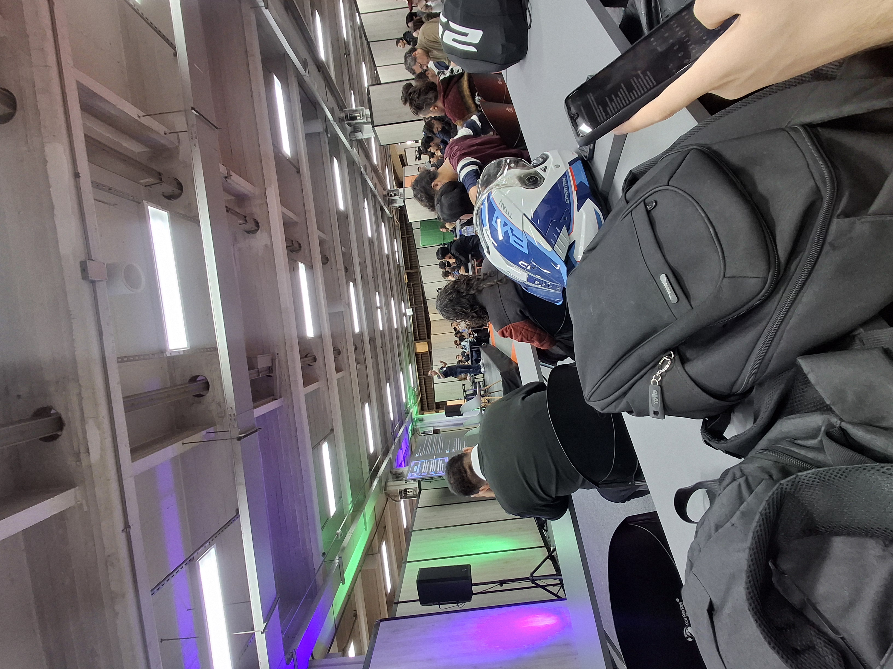
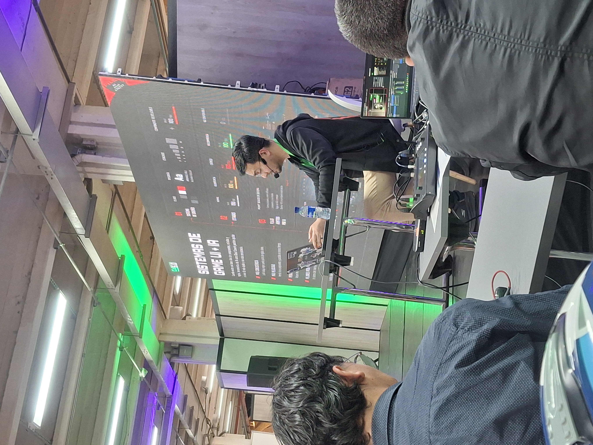
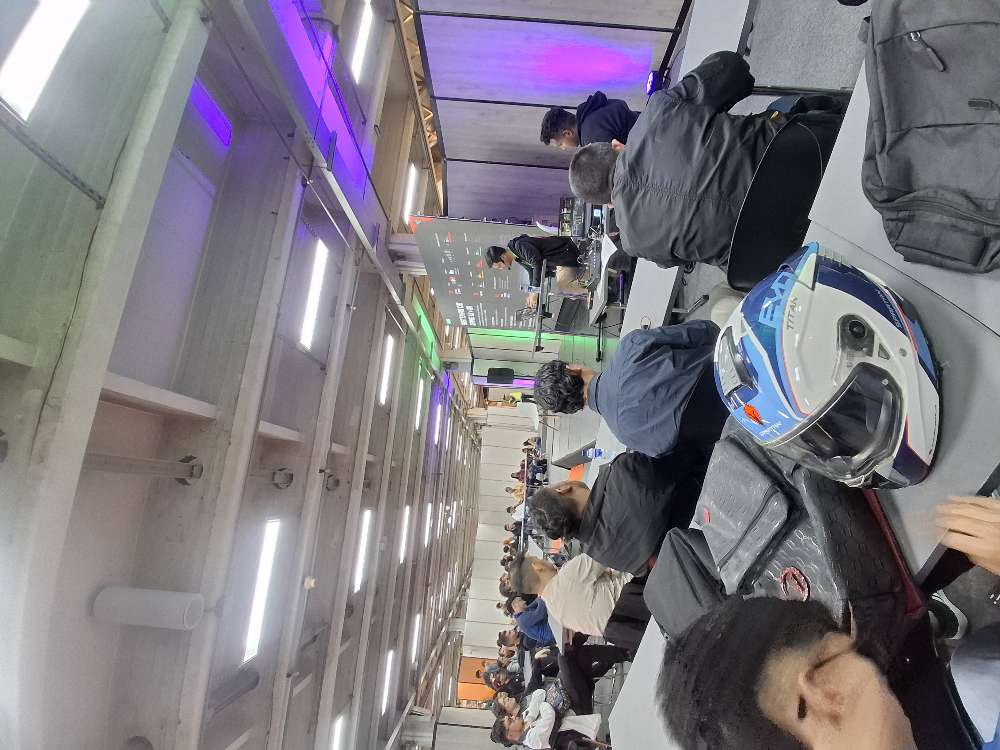
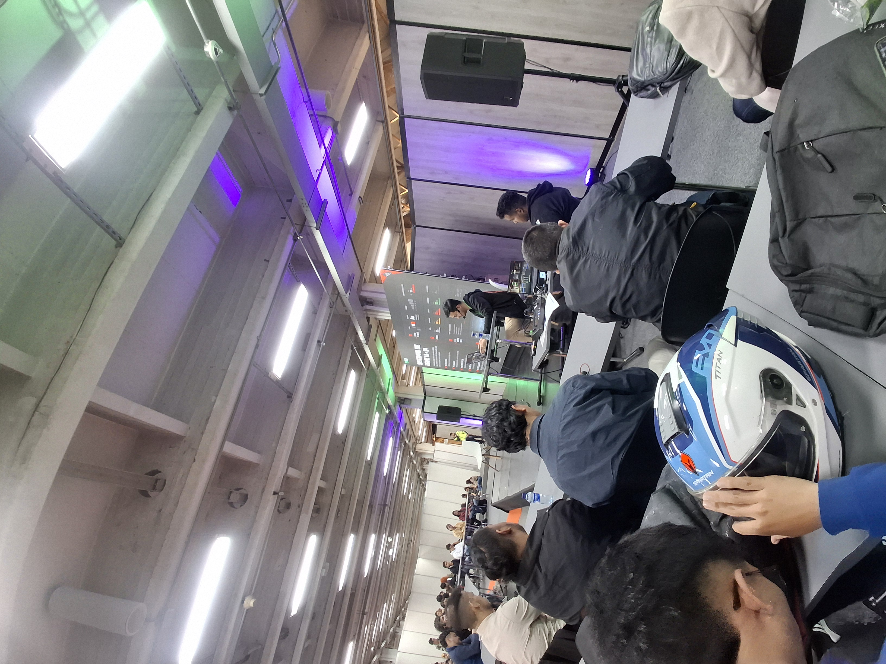
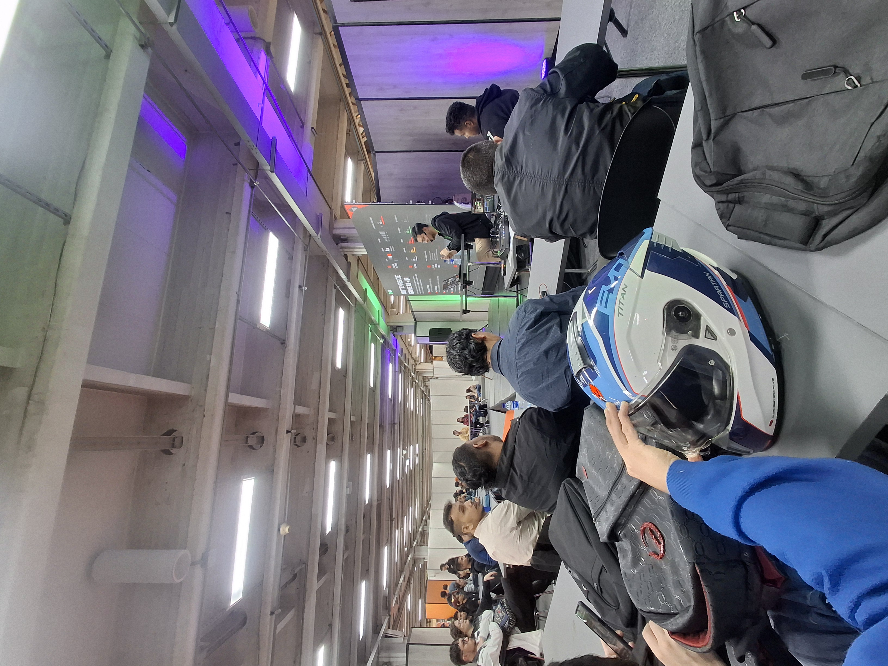
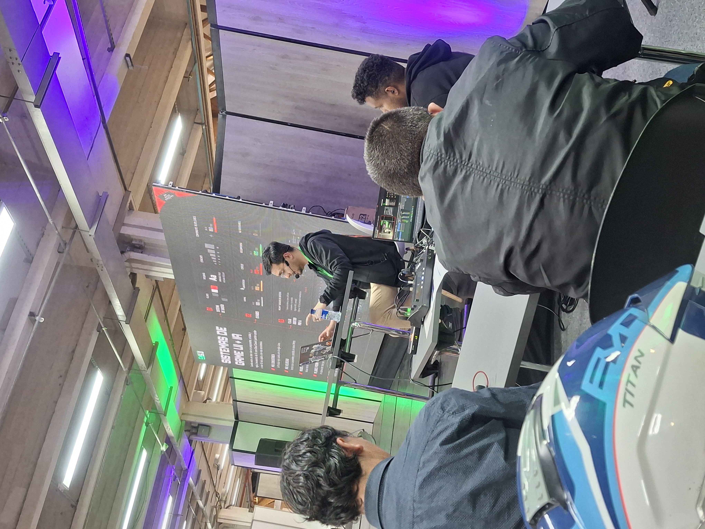

Conferencias Analizadas
Desarrollo de 'FIFA Rivals' y la Revolución de los Agentes de IA en Videojuegos
Conferencistas: Alejandro González & Jairo Nieto
En este espacio analizamos los puntos clave de la conferencia de Bacon Games. El desarrollo de 'FIFA Rivals' fue un reto de desarrollo bastante fuerte: armar un juego global en solo 10 meses. El problema principal del equipo era cómo sacar actualizaciones semanales, traducir a más de 10 idiomas y generar miles de recursos visuales sin colapsar. Para solucionarlo, explicaron cómo implementaron una arquitectura con agentes de IA, que básicamente sirven como un multiplicador de la capacidad de trabajo en el pipeline de desarrollo.
El uso de la IA se enfocó en automatizar tareas repetitivas de diseño y escalabilidad. Con herramientas automatizadas para quitar fondos y mejorar la resolución de imágenes (upscale), el equipo procesó miles de cartas de jugadores en tiempo récord. Lo que antes tomaba semanas de trabajo manual, pasó a resolverse en horas. Esto nos demuestra que optimizar el flujo de trabajo con IA permite mantener una calidad visual de nivel internacional sin quemar al equipo de desarrollo.
Como aprendices de software, lo más interesante fue ver cómo usaron sistemas como Google Gemini para automatizar la documentación de las APIs y agilizar el código del backend. Estos asistentes de programación optimizaron la localización del software y mejoraron las pruebas de QA (control de calidad). Al final, la lección de este evento es clara: integrar IA en el ciclo de vida del software ya no es una opción, sino una necesidad para competir en el mercado de la industria 5.0.


Game UI Systems: De pantallas bonitas a interfaces que funcionan
Conferencista: Andrés Felipe Pisso Tobar (Lead UX Designer)
Esta charla nos cambió la perspectiva sobre el diseño frontend e interfaces. El expositor nos explicó que diseñar UI no es solo hacer pantallas sueltas que se vean bonitas, sino construir un sistema escalable y lógico. En el taller vimos las 5 fases clave que estructuran un sistema de UI profesional:
- Foundations: El ADN visual del proyecto: colores, fuentes y la jerarquía que guía al usuario.
- Components: Bloques de código y diseño reutilizables, como botones, inputs y contenedores.
- States: Cómo responde la interfaz visualmente según la lógica del juego (Normal, Alerta, Crítico, Recompensa).
- Patterns: Estructuras repetibles que organizan las pantallas para que la navegación sea coherente.
- Screen: La vista final ya unificada, modular y limpia de código redundante.
Además, aprendimos técnicas clave en Figma que nos sirven mucho para maquetar, como el uso de Auto Layout para hacer diseños adaptables y Variants para gestionar los estados del componente (hover, activo, deshabilitado). Por último, nos enseñó el 'Test de los 3 Segundos' para evaluar el HUD: en solo 3 segundos el usuario debe entender qué está pasando, cuántos recursos tiene y si hay algún peligro en pantalla. Una gran lección de usabilidad aplicada.





Glosario Técnico de Términos
| Término (Inglés) | Traducción (Español) | Definición Académica |
|---|---|---|
| Scalability | Escalabilidad | Capacidad de un sistema para manejar el crecimiento sin perder rendimiento. |
| AI Agent | Agente IA | Entidad de software autónoma que ejecuta tareas lógicas específicas mediante modelos de lenguaje. |
| Programming | Programación | Proceso de diseñar y codificar instrucciones estructuradas para una computadora. |
| Robust Documentation | Documentación Robusta | Registro exhaustivo de la arquitectura, APIs y lógicas de desarrollo de un sistema. |
| Backend | Backend | Capa lógica de servidor y procesamiento de datos oculta al usuario final. |
| QA (Quality Assurance) | Aseguramiento de Calidad | Procesos sistemáticos de control para auditar fallas y errores en el software. |
| Localization | Localización | Adaptación técnica, lingüística y cultural de un software a un mercado regional. |
| Prompt Engineering | Ingeniería de Prompts | Diseño estratégico de instrucciones de entrada para optimizar modelos generativos. |
| Asset Generation | Generación de Activos | Creación automatizada o manual de recursos visuales, de audio u optimizaciones gráficas. |
| Biomemory | Biomemoria | Concepto avanzado de persistencia contextual y almacenamiento lógico en agentes inteligentes. |
| Cloud Computing | Computación en la Nube | Distribución de servicios tecnológicos (servidores, redes) bajo demanda vía Internet. |
| UI (User Interface) | Interfaz de Usuario | Conjunto de elementos visuales y controles gráficos mediante los cuales el usuario opera. |
| UX (User Experience) | Experiencia de Usuario | Percepción, facilidad de uso y nivel de satisfacción del usuario al interactuar con el software. |
| HUD | Heads-Up Display | Información gráfica proyectada de forma fija en la pantalla durante el gameplay. |
| Variants | Variantes | Agrupaciones en Figma para organizar different states of the same component. |
| Auto Layout | Auto Layout | Propiedad dinámica de diseño estructural que adapta contenedores según su contenido. |
| Figma | Figma | Herramienta colaborativa en la nube para el prototipado y diseño de interfaces. |
| Gameplay | Gameplay | Experiencia e interacción nuclear que definen las mecánicas de un videojuego. |
| Responsive Design | Diseño Adaptable | Filosofía de maquetación que ajusta el CSS a cualquier tamaño de pantalla de usuario. |
| Visual Hierarchy | Jerarquía Visual | Organización intencional de elementos para guiar el ojo del usuario según su relevancia. |
| Iconography | Iconografía | Lenguaje simbólico visual simplificado usado para comunicar funciones de software. |
| User Feedback | Retroalimentación | Respuesta interactiva (visual/audible) del sistema ante una acción humana. |
| Deployment | Despliegue | Fase de publicación técnica para mover código desde el entorno local a producción. |
| Framework | Marco de Trabajo | Estructura de software estandarizada que accelerates application development. |
| API | Interfaz de Aplicación | Protocolo de comunicación seguro entre sistemas de software independientes. |
| Latency | Latencia | Tiempo de retraso exacto medido en la transmisión de datos a través de una red. |
| Database | Base de Datos | Repositorio estructurado para el almacenamiento, consulta y modelado de datos. |
| Optimization | Optimización | Modificación del código para incrementar la velocidad y disminuir el uso de recursos. |
| Repository | Repositorio | Espacio digital centralizado donde se gestiona y almacena código fuente con Git. |
| Version Control | Control de Versiones | Sistema técnico para registrar y coordinar las modificaciones de código en equipo. |
Reflexión Ética y Conclusión
Ética en la Tecnología Empresarial
Para nosotros como futuros desarrolladores, la ética no es teoría, es un requisito clave para que un proyecto de software sea sostenible. En casos como el de Bacon Games, esto se conecta directo con el manejo de datos y la privacidad. Al construir o entrenar agentes de IA, nuestra responsabilidad técnica nos exige proteger la información de los usuarios y evitar sesgos algorítmicos que afecten a la comunidad, garantizando transparencia en el backend.
El Factor Humano ante la Automatización
Respecto a la automatización de procesos y el empleo, el diseño ético nos enseña que la IA debe ser un soporte para potenciar nuestras capacidades, no para reemplazar el análisis humano. En 'FIFA Rivals', automatizar la optimización gráfica y el procesamiento de assets liberó a los diseñadores de tareas repetitivas para enfocarse en la lógica creativa de alto valor. El verdadero reto profesional está en aprender a trabajar de forma colaborativa y simbiótica con estas tecnologías emergentes.
Responsabilidad Profesional e Innovación con IA
Finalmente, estructurar un sistema visual modular en UI (como lo expuesto por Teravision Games) o desplegar software a gran escala implica cuidar la experiencia del usuario y su salud cognitiva. Las interfaces controlan cómo las personas interactúan con nuestros sistemas lógicos. Como aprendices del SENA, nuestro compromiso profesional nos obliga a poner la calidad, la accesibilidad limpia y la transparencia por encima de la velocidad de entrega, logrando un equilibrio real entre la innovación del software y el impacto social.